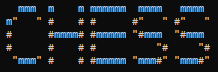
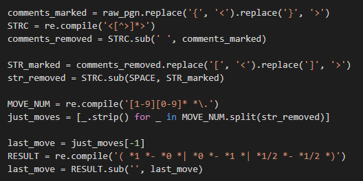
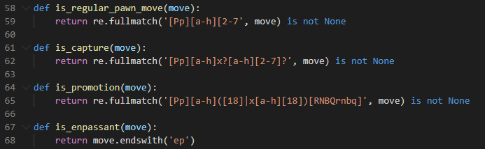
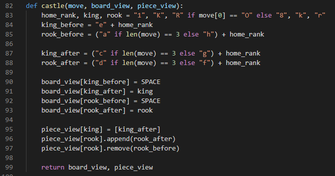
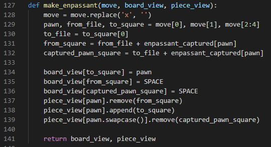
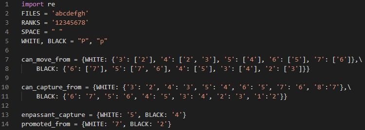

Description of the Code¶
{kind=link}
Reading PGN file¶
In the line 16-56, there are four functions namely:
In these the pgn file from which the comments are removed and the moves are collected up. Regex module is used in the fist part of the function in the code which helps in obtaining a similar pattern. In this, I replaced open brackets ({, [) with < and clsoed brackets (}, ]) with >. Then I removed all the data with the angle brackets and hence removed all the comments from the pgn file.
Checking pawn motion¶
{kind=link}
In the line 58-68, there are 4 function named:
In these function the type of pawn motion is checked whether it is a normal move of a pawn, if it is capturing a piece, if its the promotion case of pawn or is it enpassant, all the cases are checked in this part of code. Here again, regex is used which helps in determining the pattern.
Move pawn¶
In line 70-80, the function make_pawn() changed the position of pawn if the piece is pawn
Castling¶
{kind=link}
Line 82-99 checks for the castling move.
This is the castling code in which I have assigned home_rank, king and rook on the basic of color case (for black it is o and for white it is O given in moves). The next thing to take care was whether it is queen side castling or the other. For that I checked for the length of the moves (for queen side it is O-O-O and for other it is O-O). Then I changed the postions in the board view and the piece view and returned it.
Enpassant¶
{kind=link}
Line 127-141 checks for the enpassant move.
This is the enpassant code in which I have removed the captured part first from the move (i.e. the x written in the move string) and then assigned different values to pawn, from_file and to_square. Then I looked for the final position where the pawn has moved and for the position at which the pawn has been captured.
After getting the postions of captured pawn piece I changed the positions for all the pawns which have moves in the board view and the piece view and then returned the value.
Rest Code¶
{kind=link}
In this part of code I have initialised some constant values which are used in my whole code. FILES refers to the columns that go up and down the chessboard. RANKS are rows that go from side to side across the chessboard and are referred to by numbers. can_move_from tells about all the possible ranks where a pawn can move (given a dictionary of initial and final ranks possible). Similarly, the dictionary can_capture_from tells the possible positions where a given rank of pawn can capture another pawn at a particular rank.
For the code reference click here: CODE